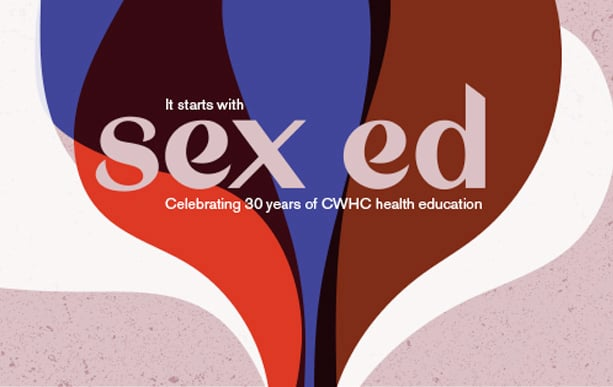
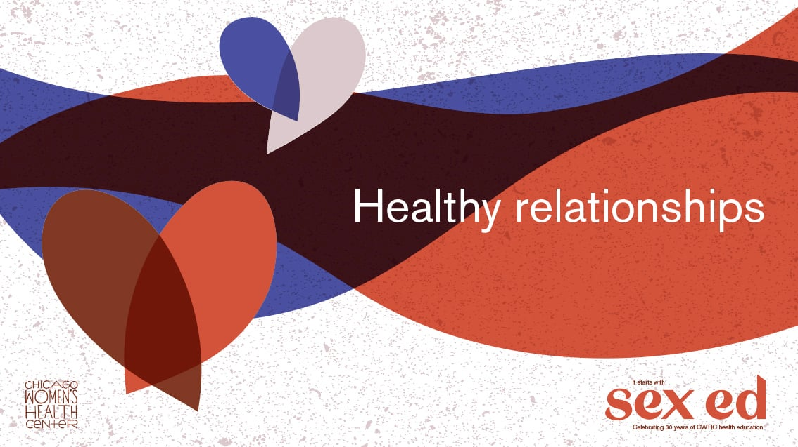
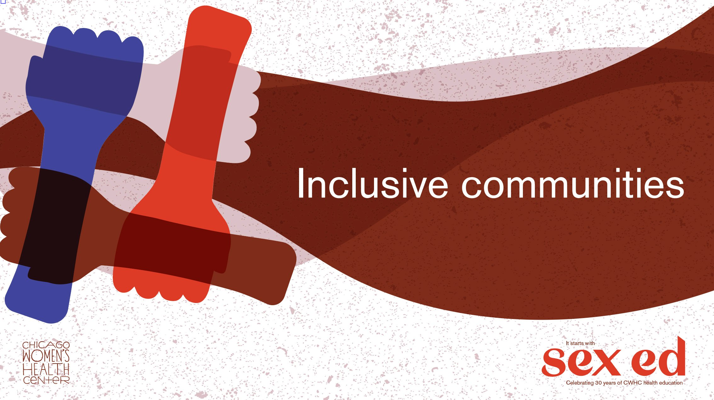
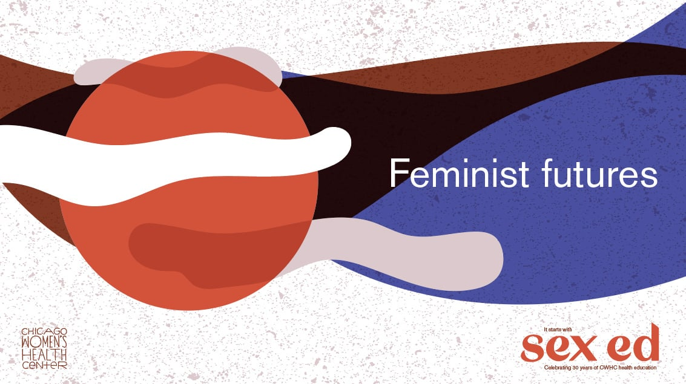
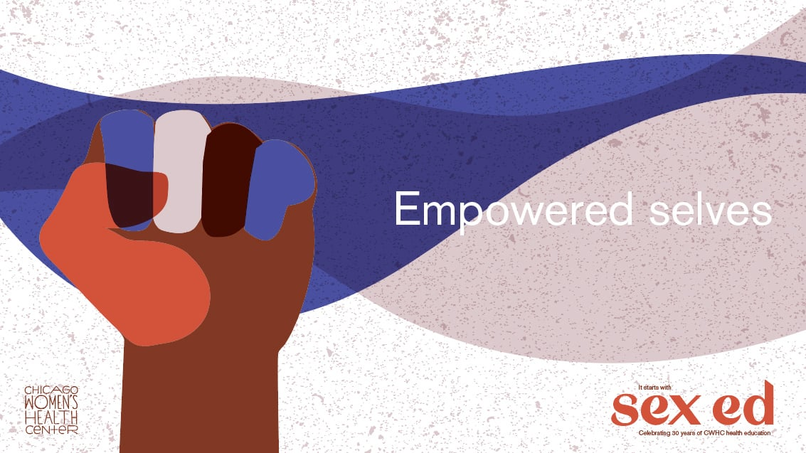

Annie: Where did you draw your inspiration?
Annie: How did you settle on the look of the letters?

Leff interview series: Our design work for Chicago Women’s Health Center: A Q&A with Leff’s Katie Edwards
Design by Katie E. for CWHC
Annie is an editor who worked in marketing
and taught college-level writing, humanities, and speech before joining the Leff team.
Katie is a design associate who studied graphic design with a focus on printing, typography,
and design history at the University of Illinois
at Chicago.
We recently wrapped up a campaign for Chicago Women’s Health Center (CWHC) to celebrate the nonprofit’s 30 years of providing sex education to young people and underserved communities. In this Q&A, editor Annie talks with design associate Katie Edwards, who designed the promotional assets CWHC used for the fund-raising event it held on May 30, 2019.
Katie: I decided I wanted a major contrast between the thin and thick parts of the letters. In a lot of standard typefaces that you see in Microsoft Word, the contrast between the thin and thick parts isn’t extreme, making them easier to read. But I knew that the assets wouldn’t have many words and that the letters would be big and easy to read, so I wanted these letters to have high contrast. I wanted them to make a big statement and be kind
of dramatic.
I ended up making these curvy, organic letters and shapes, which evoke femininity and represent the women and the nonbinary people CWHC serves.
Katie: A lot of modern graphic design is rooted in web design and user experience and corporate uses—charts, graphs, reports. But if you look back at the ’50s, ’60s, and ’70s, those graphic artists were artists. They were hand-drawing ads in magazines and their own typefaces—a lot of which featured curves and swashes. That’s a lot of the stuff I look to for inspiration.
Specifically for this project, I knew the assets would be on social media, and I’m so sick of seeing ads on Instagram that just look like ads. So I was trying to design something that was different from what you would typically see—something that I would stop scrolling to look at.
I also knew that CWHC wanted something artistic looking. The whole clinic has this DIY attitude: a) because they don’t have a lot of funding, and b) because the communities they serve in Chicago have historically been more DIY because they haven’t had access to resources that might be readily available to other groups. CWHC mentioned wanting hand lettering, which brings that DIY community aspect into the branding. I’ve always loved doing hand lettering, so that was a good fit.


Annie: What was your process for creating this typeface?
Katie: I started by sketching the letterforms on paper to get the idea of how I wanted them to look.
Building typefaces starts with one letter. I started with the “e” and then the “s” because those two have similar forms. And then I did the “x,” which was completely different because it is linear—there’s no way you can make an “x” curvy. So I built off what I had already created, using the same thicknesses and same basic shapes.
Once I had the letters sketched out as a reference, I drew them in Adobe Illustrator with my mouse and refined them from there. Drawing on paper or with a tablet is more comfortable because there’s a disconnect between your mouse and your screen when working on the computer. But Illustrator is a good way to get the lettering precise.
Annie: Why did you choose these colors?
Katie: I chose red and blue for two related reasons. A lot of sex-ed designs use pink (or red) and blue—Planned Parenthood’s brand colors are pink and blue. I wanted something familiar
but slightly different, so I adjusted the hues. These colors also commonly represent male (blue) and female (red).
I paired these colors with a light pink and a brown to represent the racial spectrum, because the language CWHC uses is inclusive: all genders, all bodies, all races, all ethnicities. CWHC ended up wanting to change the pink, so it turned into this sort of mauve-y gray, which seems alien. But the center liked it. I’m not here to shame any aliens.
Annie: What was your favorite part of this project?
Katie: I think the best part of the process was working with CWHC. Rachel, our editor on the project, and the organization went back and forth a lot about language, how to talk about its sex-ed practice, and what it’s offering to these communities.
It’s kind of revolutionary to talk about sex ed in underserved communities that can’t typically access this information. And CWHC is making this happen even though they have low funding and rely on volunteers. The work felt important.


Design by Katie E. for CWHC

Design by Katie E. for CWHC

Design by Katie E. for CWHC

Design by Katie E. for CWHC